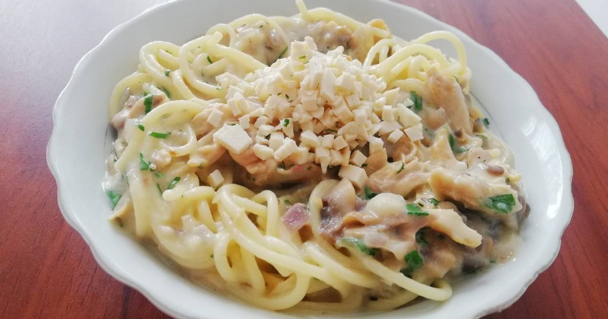
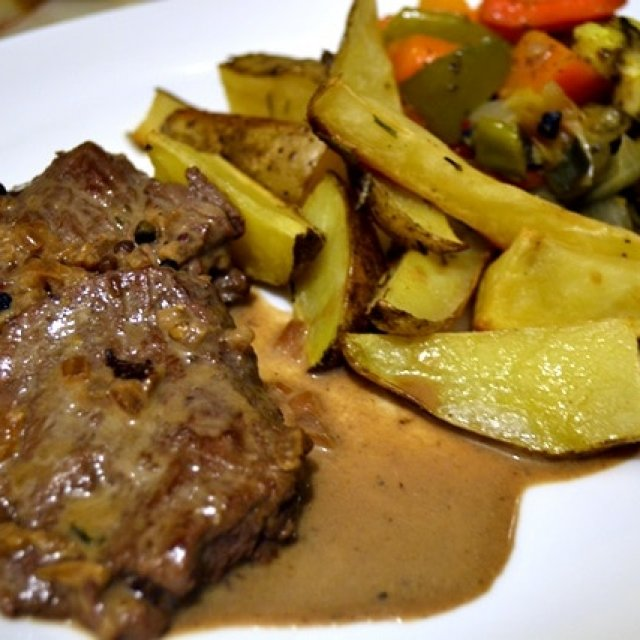
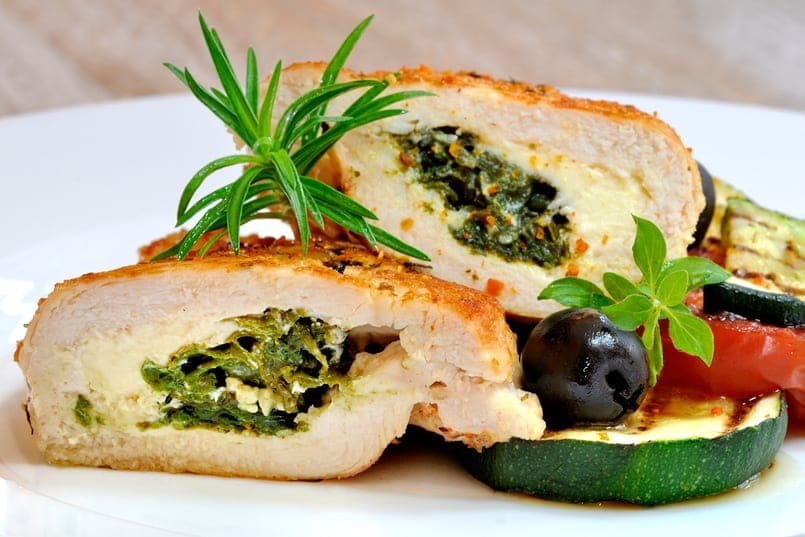

1. Condimentar el solomito con sal y pimienta
2. Cortar en julianas el pimenton rojo y la cebolla
3. Saltear el solomito con los vegetales,la salsa soya, medio limon
y un poco de salsa de carne
4. Cuando este listo el salteado, poner en una sarten la tortilla de
harina con el queso mozarella y esperar que se derrita
5. Rellenar la tortilla con el salteado y agregar tabasco al gusto
1. Sofreir la carne molida con la cebolla y el ajo
2. En una liquadora agregar los tomates cortados y la pasta de
tomate
3. Cuando este lista la carne, agregar el contenido de la liquadora
a la carne junto con sal, pimienta y oregano
4. Dejar que se cocine bien y agregar azucar para bajar la acidez de
tomate
5. En un molde de lasaña agregar un poco de salsa bechamel una hoja
de lasaña, la salsa boloñesa y queso mozarella.
6. Repetir la secuencia y agregar en la parte de arriba una capa de
mozarella y parmessano
Pasta blanca con pollo y champiñones
ingredientes
2 filetes de pechuga de pollo
250gr de champiñones
300ml de crema de leche
1/4 de leche
Mantequilla
Pasta a elección
sal y pimienta

Procedimiento
1.Cocinar el pollo en una olla con agua
2.Cuando este listo el pollo sacarlo del agua y dejarlo enfriar para
desmecharlo facil
3.En una olla con agua agregar la pasta con sal y un poco de aceite
y esperar que se cocine
4. Cuando este lista la pasta, en una sarten agregar mantequilla, un
poco de aceite y los champiñones cortados
5. Agregar el pollo desmechado al sarten y sal pimentar todo.
Despues de unos minutos agregar la crema de leche con un chorrito de
leche. 6. Esperar unos minutos y servir esta salsa junto a la pasta
y parmesssano por encima.
Solomito pimienta
ingredientes
3 filetes de lomo
300ml de crema de leche
200gr de champiñones
1/2 cebolla
2 dientes de ajo
pimienta y sal

Procedimiento
1. Sofreir la cebolla con el ajo y cuando este transparente agregar
el lomo
2. Esperar a que la carne se cocine y agregar sal y pimienta
3. Agregar la crema de leche y revolver
4. Esperar unos minutos y agregar mas pimienta
5.Apagar el fuego y servir, en la receta se puede utilizar vino
blanco durante la preparacion pero es opcional
Milanesas de res
ingredientes
3 filetes de solomito
2 huevos
mostaza
miga de pan
sal, pimienta, comino
Procedimiento
1. Condimentar el solomito con sal, pimienta y comino.
2. Revolver 2 huevos con 2 cucharadas de mostaza y remojar los
filetes en el huevo
3. Pasarlos por miga de pan por ambos lados y freir en aceite.
4. Acompañar con lo que desees puré de papa o ensalada.
Pollo relleno al horno
ingredientes
6 filetes de pechuga de pollo
50gr deQueso crema
4 cucharadas de queso parmessano
1/4 de Espinacas
1/4 de kg de tocineta
12 tajadas de queso mozarella
1/4 de cebolla picada con 1 diente de ajo

Procedimiento
1. Sal pimentar las pechugas y aplanarlas con un martillo de cocina
con cuidado de no romperlas
2. Ubicar las pechugas en una capa de papel film una junto a la otra
, 3 a un lado y 3 al otro, agregar las tajadas de mozarella sobre
ellas
4. Para el relleno agregar el queso crema en un bowl con parmessano.
cocinar las espinacas en un sarten con el ajo y agregar al relleno
5. Esparcir el relleno encima de las pechugas con mozarella y
enrollar con el papel film que tiene abajo. Dejar en la nevera por 1
hora
6. Ubicar el rollo en tiras de tocineta y envolver el pollo. llevar
1 hora a 180°c
.jpg)

.jpg)